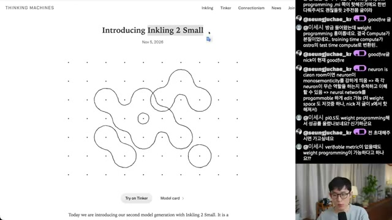
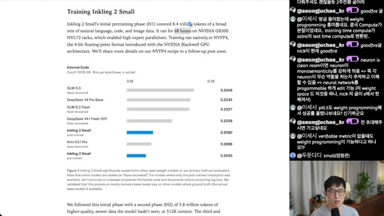
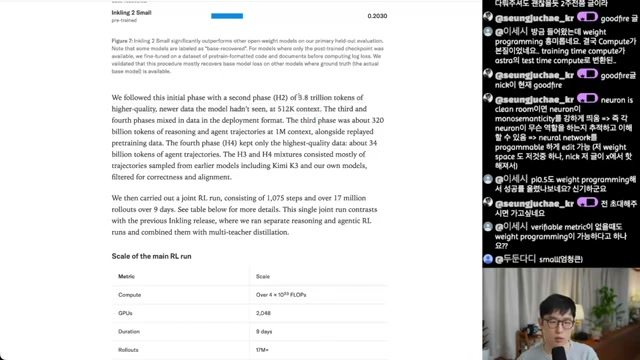
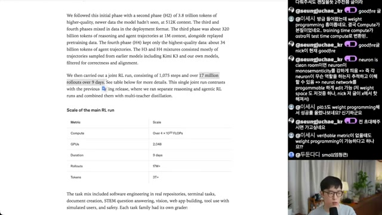
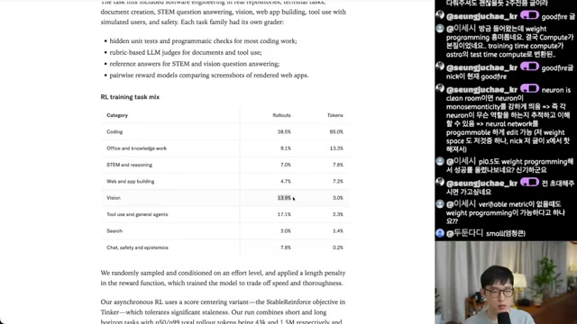
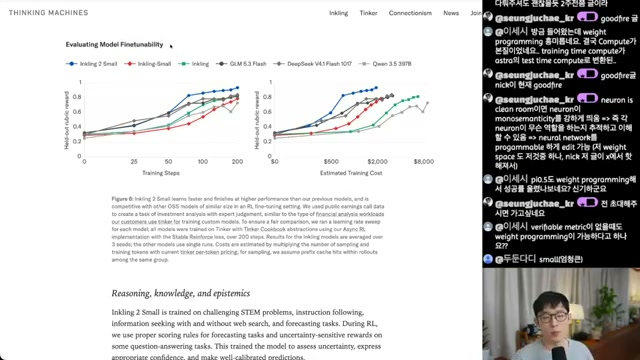
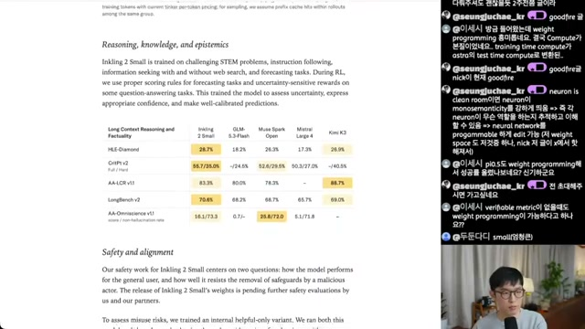
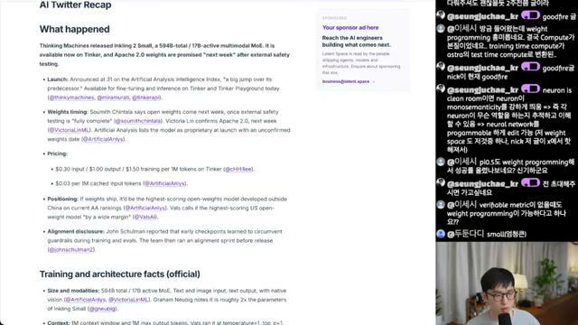

이 모델에서 읽어야 할 세 가지
-
1
모델 크기보다 학습 과정의 공개가 눈에 띔
594B·활성 17B라는 사양에 더해, 단계별 토큰 수와 컨텍스트 길이, 하드웨어와 정밀도, RL 실행 규모가 제시됨. 결과물뿐 아니라 만들어진 경로를 살펴볼 단서가 늘어남.
-
2
RL의 작업 비중은 토큰으로 다시 봐야 함
코딩은 롤아웃의 38.5%지만 토큰의 65.0%를 차지. 작업 횟수와 생성 토큰 양은 다른 분포를 보이며, 예산을 계획할 때 둘을 구분할 필요.
-
3
‘학습 후 얼마나 좋아지는가’가 평가축으로 등장
동일 플랫폼에서 추가 RL을 수행한 뒤, 스텝·비용에 따른 보상 곡선을 비교. 다만 투자 분석 한 과제의 결과이므로 다른 도메인으로의 일반화는 미검증.

68시간 뒤에도,
학습은 계속됨
‘8.4T 토큰을 68시간에 학습’이라는 수치는 강한 인상을 남김. 그러나 이는 H1에 해당하는 기록. 뒤에는 고품질 데이터, 긴 컨텍스트, 추론·에이전트 궤적을 중심으로 한 H2~H4가 이어짐.

-
H1
자연어·코드·이미지로 기반 학습
8.4T 토큰 · 68시간 · GB300 NVL72 · NVFP4혼합 데이터를 사용하는 초기 사전학습 단계. 전체 GPU 수는 노트에서 확인되지 않음.
-
H2
더 높은 품질과 긴 컨텍스트
3.8T 토큰 · 512K 컨텍스트더 고품질의 신규 데이터를 투입. H1+H2의 토큰 합계는 12.2T.
-
H3
추론·에이전트 궤적으로 확장
320B 토큰 · 1M 컨텍스트추론과 에이전트 궤적에 사전학습 데이터 리플레이를 병행.
-
H4
최고 품질의 에이전트 궤적 집중
약 34B 토큰H3·H4 혼합물은 대부분 Kimi K3와 자사 모델 등 이전 모델에서 샘플링한 궤적을 정확성·품질 기준으로 필터링한 것으로 설명됨.

영상 속 공식 글은 NVFP4 네이티브 학습을 명시. 다만 정밀도 운용과 학습 안정화의 구체적 레시피는 이 자료에 없음. 모델 전체의 모든 연산이 동일한 4bit로 수행됐다고 확장 해석하거나, 같은 결과를 재현할 수 있다고 판단하기는 어려움.
보조 근거: 내부 코드 데이터 평가
화면의 bits-per-byte 그래프는 낮을수록 좋은 지표로 제시됨. 내부 코드 데이터의 컷오프는 2026년 6월. 아래 값은 360p 화면에서 읽은 근삿값이며, 범용 코딩 성능 순위와는 구분해야 함.
| 모델 | bits-per-byte ↓ |
|---|---|
| Inkling 2 Small | 약 0.203 |
| Kimi K3.1 Pro | 약 0.207 |
| DeepSeek V4 Pro Base | 약 0.234 |
| GLM-5.3 | 약 0.236 |
진행자의 ‘GB300 수천 장’ 역산과 과거 Kimi의 약 20T 토큰 비교는 각각 추정·기억에 따른 언급. 검증된 하드웨어 규모나 통제된 비교로 사용하지 않음.
RL은 9일.
토큰의 65%는 코딩에
메인 RL은 1,075 스텝, 1,700만 회 이상의 롤아웃, 3T 이상의 토큰을 사용하는 단일 공동 실행으로 설명됨. 이전 Inkling에서 추론 RL과 에이전트 RL을 따로 수행한 뒤 multi-teacher distillation으로 합쳤던 방식과 대비됨.
8.4T 토큰
GPU 수는 이 자료에서 미확인
3T+ 토큰
2,048 GPU
단순 시간 환산: 9 × 24 = 216시간, 216 ÷ 68 ≈ 3.18배. 경과 시간의 비교일 뿐, GPU 수·활용률·연산 구성이 다른 두 단계의 총연산량이나 비용 비율을 뜻하지 않음. H2~H4 시간도 포함하지 않음.

롤아웃 횟수와 토큰 양은 다른 이야기
코딩은 횟수 비중보다 토큰 비중이 큼. 반대로 비전과 툴 사용은 횟수 비중에 비해 토큰 비중이 작음. 이 차이는 태스크별 평균 궤적 길이의 차이를 읽는 단서가 됨.
대표 세 범주의 비중 비교
| 카테고리 | 롤아웃 | 토큰 |
|---|---|---|
| Coding | 38.5% | 65.0% |
| Office and knowledge work | 9.1% | 13.3% |
| STEM and reasoning | 7.0% | 7.6% |
| Web and app building | 4.7% | 7.2% |
| Vision | 13.9% | 3.0% |
| Tool use and general agents | 17.1% | 2.3% |
| Search | 2.0% | 1.4% |
| Chat, safety and epistemics | 7.8% | 0.2% |
노트에 옮겨진 표시값 기준 합계는 롤아웃 100.1%, 토큰 100.0%. 롤아웃 합계 차이는 반올림 가능성이 있으나 원자료와 별도 대조하지 않음.
두 비중이 같은 롤아웃 집합과 토큰 집계 기준을 사용한다면, 다음 비율로 전체 평균 대비 태스크별 평균 토큰 길이를 추정할 수 있음.
상대 평균 길이 = 토큰 비중 ÷ 롤아웃 비중코딩은 약 1.69배, 비전은 약 0.22배, 툴 사용은 약 0.13배. 이 계산은 표시값에 따른 파생 해석이며, 성능 향상량이나 실제 학습 비용을 나타내지는 않음.

태스크마다 다른 보상, 비동기 실행
- 코딩: 숨겨진 유닛 테스트와 프로그램 검사.
- 문서·툴 사용: 루브릭 기반 LLM judge.
- STEM·비전 QA: 참조 답안 기반 평가.
- 웹앱: 렌더링 스크린샷을 비교하는 pairwise 보상 모델.
비동기 RL에는 오래된 정책으로 생성된 데이터의 지연(staleness)을 견디기 위한 score-centering 변형이 사용된 것으로 소개됨. 화면에서 이를 Tinker의 StableReinforce objective와 연결하지만, 이 노트만으로 목적함수와 구현을 재현할 수는 없음.
완성된 점수에서
배우는 곡선으로
진행자가 가장 주목한 대목은 ‘Evaluating Model Finetunability’. 학습 전의 점수만 비교하는 대신, 같은 과제로 추가 학습했을 때 보상이 어떻게 달라지는지 제시한 실험임.
모델 선택의 다음 질문은
“내 과제를 배우면,
얼마나 더 좋아지는가?”
같은 과제, 같은 플랫폼
Tinker 고객의 금융 분석 업무와 유사한 투자 분석 과제. 모든 비교 모델에 같은 방식의 RL 파인튜닝을 적용하고 3개 시드의 평균을 제시.
스텝과 비용을 함께 비교
가로축은 학습 스텝 0~200과 추정 학습 비용 $500~$8,000. 세로축은 학습에 쓰지 않은 평가 데이터의 루브릭 보상.

이 평가 방식은 학습 플랫폼의 가치와 맞물림. Tinker를 통해 학습을 제공하는 회사라면, 고객에게 중요한 것은 출발점의 성능뿐 아니라 추가 예산으로 얻을 수 있는 개선이기 때문. 다만 ‘학습을 파는 사업 모델’이라는 연결은 진행자의 해석이며, 해당 그래프만으로 사업 전체를 설명할 수는 없음.
그래프에서 높은 보상을 보인다는 관찰만으로 그 원인이 적은 사전학습 토큰 수라고 결론 내릴 수 없음. 모델 크기·구조·초기 성능·데이터·보상 설계 등 여러 변인이 함께 달라질 수 있음.
‘과도하게 사전학습한 모델은 파인튜닝하면 깨진다’는 연결은 진행자도 루머 수준이라고 명시. H1+H2 약 12T와 파인튜닝 적합성의 인과관계는 미검증.
이 결과가 말해주는 것과 남겨둔 것
확인 가능한 범위는 제시된 투자 분석 과제와 Tinker의 평가 조건에서 나타난 곡선. 여러 도메인에 걸친 재현성, 실제 업무 품질, 학습 전후 개선 폭의 정밀 비교, 비용 추정의 세부 가정은 독립적으로 확인할 필요. 3시드 평균은 유용한 정보지만, 그 자체로 통계적 유의성까지 보장하지 않음.
공개 방침과 실제 배포는
구분해서 읽기
영상의 공식 발표 화면에는 자사와 파트너의 추가 안전성 평가 이후로 가중치 공개를 보류한다는 문장이 보임. 따라서 이 시점의 ‘오픈웨이트 모델’을 곧바로 내려받아 쓸 수 있는 모델로 읽으면 안 됨.

가격은 제3자 화면의 기록
영상 마지막의 AI Twitter Recap은 공식 발표 페이지가 아닌 제3자 뉴스레터. 아래 가격과 ‘Tinker 즉시 사용 가능’, ‘다음 주 가중치 공개 예정’, Artificial Analysis Intelligence Index 31 등의 정보는 이 화면에서 온 전언이며 공식 자료와 대조되지 않음.
| 구분 | USD / 1M 토큰 |
|---|---|
| 입력 | $0.30 |
| 캐시 입력 | $0.03 |
| 출력 | $1.00 |
| 학습 | $1.50 |
현재 가격 안내가 아닌 영상 화면의 기록. 진행자는 ‘1빌리언 토큰당’이라고 말했으나, 화면 단위는 per 1M tokens, 즉 100만 토큰당. 청구 범위와 부대 비용은 이 자료에서 확인되지 않음.

무엇을 근거로 읽었는가
이 글의 직접 입력은 제공된 Obsidian 분석 노트. 아래의 수집·검사 과정은 원본 노트가 기록한 방법이며, 이 HTML을 작성하면서 다시 수행한 검증은 아님.
-
기본 출처영상·자막·메타데이터
sudoremove의 「파인튜닝 가능한 오픈웨이트 모델 | Thinking Machines Inkling 2 Small」. 노트 기준 게시일 2026년 11월 9일, 길이 469초, 챕터 9개. 한국어 수동 자막 전체와 설명란·메타데이터를 사용한 것으로 기록됨.
-
화면 속 공식 자료발표·학습 설명·평가 그래프
Thinking Machines의 ‘Introducing Inkling 2 Small’, ‘Training Inkling 2 Small’, ‘Evaluating Model Finetunability’ 내용이 영상에 제시됨. 본문은 공식 웹 원문을 직접 대조한 결과가 아니라, 영상 화면과 노트의 판독을 통해 전달한 내용. 원문 URL이 제공되지 않아 임의의 링크를 추가하지 않음.
-
제3자 전언가격·출시 시점·외부 지표
AI Twitter Recap 화면의 가격, ‘다음 주’ 공개 일정, Intelligence Index는 공식 자료와 구분. 현재 유효성은 미검증. 화면 오른쪽 라이브 채팅은 시청자 발언이므로 근거에서 제외.
-
진행자 의견시장 지위와 후속 모델 전망
‘미국계 오픈웨이트 최고 모델 후보’, 더 큰 모델의 Muse 경쟁 가능성, 첫 Inkling과 회사 성과에 대한 평가는 진행자의 의견. Mira Murati·Lilian Weng 등 OpenAI 출신 인물을 언급한 회사 배경 설명과 함께 제시되지만, 이 글의 독립 검증 결론에는 포함하지 않음.
프레임 수집과 판독의 한계
노트에 따르면 1080p·720p 스트림 요청은 HTTP 403으로 거부됐고 로그인 쿠키는 사용하지 않음. 접근 가능한 영상은 640×360, 포맷 18뿐이어서 작은 글씨와 그래프 수치에 판독 오차 가능성이 있음. 본문의 이미지는 해당 8개 프레임을 보존한 것.
3초 간격 156장 샘플링 → 6초 간격 접촉 시트 육안 검토 → ffmpeg 장면 전환 검출과 챕터 경계 확인 → 12개 후보 비교 → 중복 4장 제외 → 최종 8장 선정.
장면 전환 검출은 threshold 0.25에서 0개, 0.12에서 6개. 후보의 평균 밝기는 모두 200 이상, 표준편차는 88 이상으로 기록됨. 차분이 1~2 수준인 01:24·04:54·05:48·06:48 프레임은 하이라이트 위치만 다른 사실상 중복 장면으로 제외.
밝기·표준편차와 차분 검사는 흑화면·중복 선별의 보조 지표. 텍스트 판독의 정확성을 보증하지는 않음. 원본 로그, 차분 정의와 전체 추출 명령은 이 문서에 포함되지 않아 수집 절차의 완전한 재현에는 추가 자료가 필요.
다음 모델을 고를 때,
작은 학습 실험도 함께
이 사례가 제안하는 실용적인 변화는 명확함. 공개 벤치마크에 더해, 내 과제에서 추가 학습의 이득을 측정할 필요. RL의 소요 시간과 태스크별 토큰 분포는 예산 설계의 단서가 되지만, 다른 업무에 그대로 적용할 비용 공식은 아님.
- 배포 조건 확인: 가중치의 실제 공개 여부, 라이선스, 실행 가능한 하드웨어를 확인할 것.
- 내 과제로 평가: 학습 전 성능과 고정 예산 학습 후 성능을 같은 평가 데이터에서 비교할 것.
- 비용을 분해: 롤아웃 횟수·길이뿐 아니라 도구 실행, 보상 계산, 검증 비용까지 기록할 것.
- 반복과 일반화 확인: 여러 시드와 별도 평가 과제로 성능 향상 및 기존 능력의 회귀를 점검할 것.
비전 기반 현장 판단이나 에이전트·로봇 도메인에서도 같은 질문을 던질 수 있음. 다만 영상의 비전 토큰 비중이 낮다는 이유만으로 학습 효과나 총비용을 낙관할 근거는 부족함. 도메인별 보상과 실제 성능 향상을 따로 측정해야 함.
좋은 출발점과 잘 배우는 모델은 서로 다른 평가 대상. Inkling 2 Small에 관한 이 기록의 가치는 두 질문을 나란히 놓았다는 데 있음. 다음 선택에서는 모델의 현재 점수와 함께, 제한된 예산 안에서 무엇을 더 배울 수 있는지도 확인할 필요.